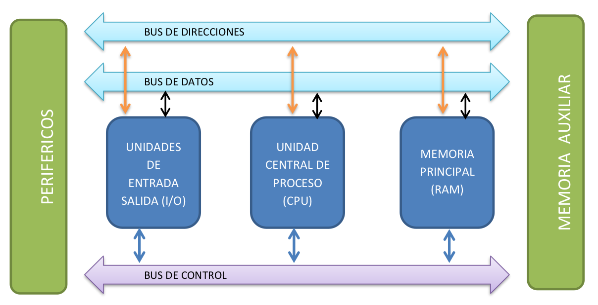
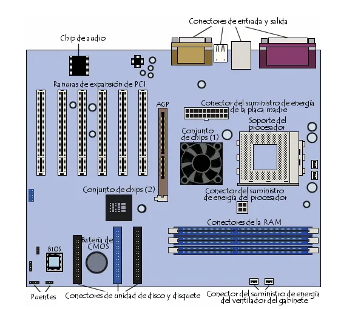

Para que sirve
La placa base es el esqueleto de nuestro ordenador. En sus ranuras van fijados todos los demás componentes, y su calidad influirá sustancialmente en la velocidad del equipo, además de en las posibilidades de ampliación de dicho equipo.La placa base, también conocida como placa madre (del inglés motherboard) es una placa de circuito impreso a la que se conectan los componentes internos del ordenador. Tiene instalados una serie de circuitos integrados, entre los que se encuentra el chipset, que sirve como centro de conexión entre el microprocesador, la memoria de acceso aleatorio (RAM), las ranuras de expansión y otros dispositivos. Va instalada dentro de la caja y tiene un panel para conectar dispositivos externos y muchos conectores internos y zócalos para instalar componentes dentro de la caja.
La placa base, además, incluye un firmware llamado BIOS, que le permite realizar las funcionalidades básicas, como pruebas de los dispositivos, vídeo y manejo del teclado, reconocimiento de dispositivos y carga del sistema operativo.
En esencia un sistema informatico está compuesto por los componentes que vemos en la siguiente imagen:  La placa base tiene el cometido de comunicar los principales componentes y de integrar los buses de transmisión.
Componentes
La placa base tiene multitud de componentes pero siempre tendrá:- El zócalo del microprocesador (en inglés socket): es un hueco o receptáculo donde se instala el microprocesador y que lo conecta con el resto de componentes a través de la placa base.
- Las ranuras o zócalos de memoria RAM.
- El chipset: una serie de circuitos electrónicos, que gestionan las transferencias de datos entre los diferentes componentes de la computadora (procesador, memoria, tarjeta gráfica, unidad de almacenamiento secundario, etc.)
- Uno o varios conectores de alimentación: la fuente de alimentación proporciona a la placa base los diferentes voltajes e intensidades necesarios para su funcionamiento mediante estos conectores.
- La CMOS: una pequeña memoria que preserva cierta información importante (como la configuración del equipo, fecha y hora), mientras el equipo no está alimentado por electricidad.
- La pila de la CMOS: proporciona la electricidad necesaria para operar el circuito constantemente y que éste último no se apague perdiendo la serie de configuraciones guardadas.
- La BIOS: un programa registrado en una memoria no volátil (antiguamente en memorias ROM, pero desde hace tiempo se emplean memorias flash). Este programa es específico de la placa base y se encarga de la interfaz de bajo nivel entre el microprocesador y algunos periféricos.
- Buses y puertos de expansión, donde conectar dispositivos de E/S
- Cabeceras del panel frontal, son un conjunto de pines para conectar al frontal de la caja, destinados al boton de encedido, reseteo, etc.
Dicho lo anterior un esquema de placa podría ser el siguiente: 